| 日付 | 2015年5月10日（日） |
|---|---|
| 山域 | 赤城・榛名 |
| メンバー | 家族（妻、長女・4歳、長男・1歳） |
| 山行形態 | 子連れ日帰り |
| アクセス | 車 |
| ルート (Map) | 姫百合駐車場 (8:04) - (10:06) 荒山 (10:21) - (11:18) 芝の広場 (12:19) - (13:20) 姫百合駐車場 |
久しぶりにアカヤシオの花を見たくて、咲いている山を調べてみたら
今年は花の咲くのが早いらしく、もうほとんどの山では終わりかけのようだ。
標高の高い赤城山なら少しは咲いているようなので、赤城山に行ってみることにする。
赤城山は複成火山で数多くのピークがあるが、今回は中心部から外れた荒山に登ってみる。
赤城山を訪れるのは今回が初めてだ。
姫百合駐車場に到着。標高1040m。
朝早く家を出たが、すでに駐車場はほぼ埋まっている。
今日はやたら風が強い。しかも結構冷たい風だ。
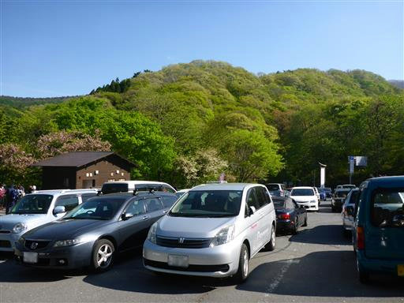
この辺りはまだ春が始まったばかり。桜と新緑が美しい。

駐車場の側の登山口から登って行く。
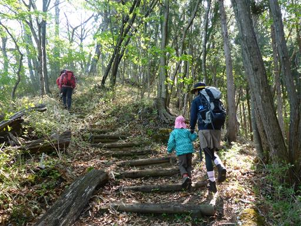
穴の開いた不思議な物体が落ちている。何だろうか？
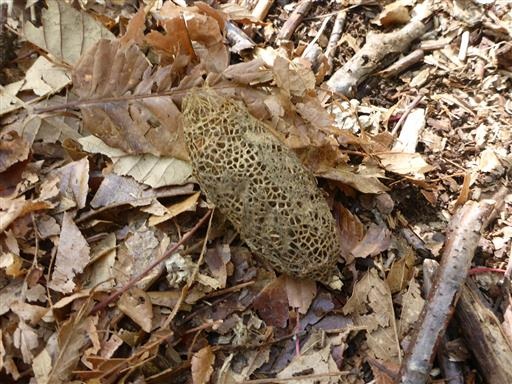
新緑の中の道を登る。
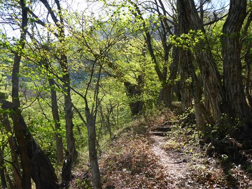
標高差はあまり無いので緩やかな道が続く。
今日は息子が泣きっぱなし。強風が怖いようだ。
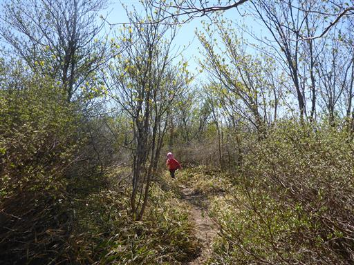
途中で一箇所展望が広がる。今日も全体的に霞んでいる。
季節がらか、ここ最近すっきりと展望を見渡せることが無い。
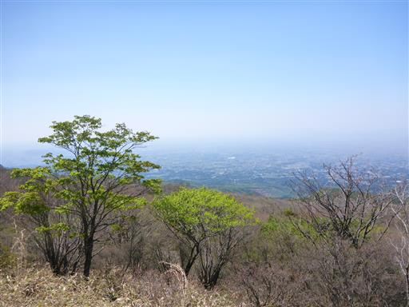
足元にスミレの花が咲いている。濃い紫色のスミレだ。
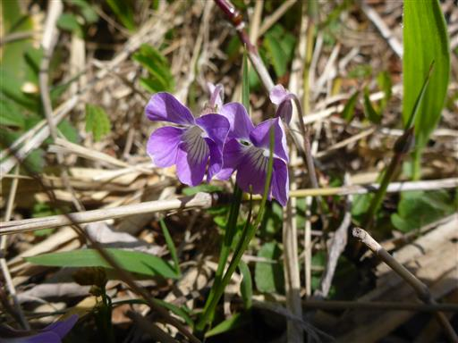
こちらはリンドウの花。
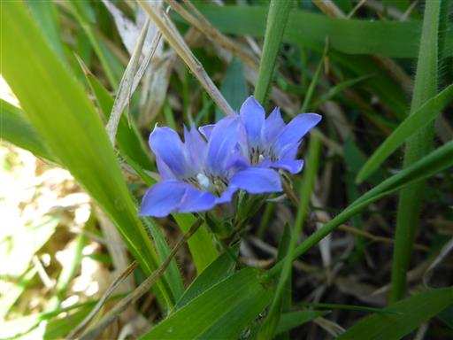
山頂に近づくとちらほらとアカヤシオの花を見かけるようになる。
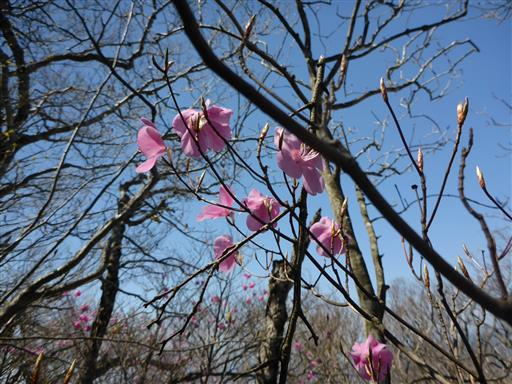
しかし、多くの花はもう落ちてしまっている。
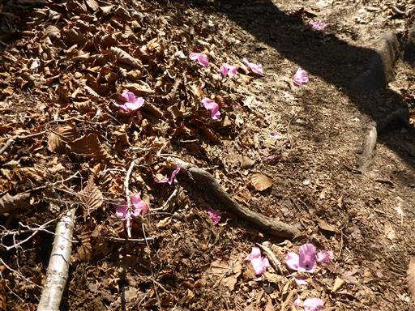
荒山の山頂に到着する。標高1572m。
山頂にも登山道にも人は少ない。隣にある鍋割山の方が人気のようだ。
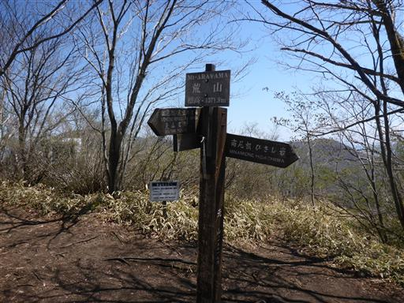
山頂にも一本だけアカヤシオの花が付いた木が立っている。
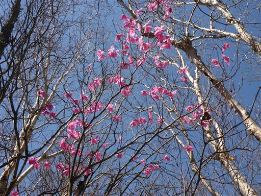
山頂は展望があまり良くないが、少し離れた場所から展望を望むことができる。
赤城山の中心部と、遠くに武尊山が見えている。
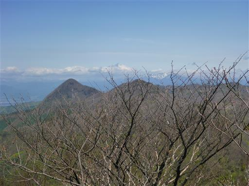
遠くには薄らと雪を被った上越国境の山々が見えている。
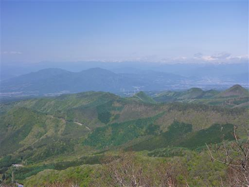
昼食にはまだ早いので、山頂でおやつ休憩をとったら出発することにする。
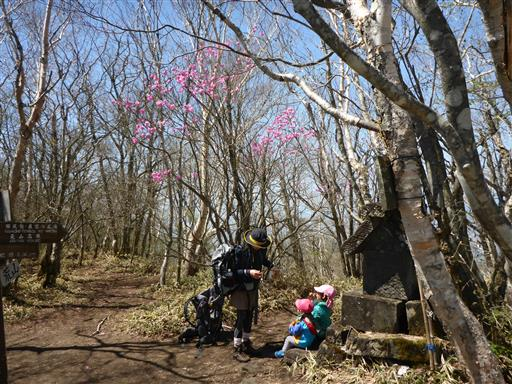
この界隈は登山道がたくさんあるので周回コースをとれる。
下山道も緩やかで歩きやすい道だ。
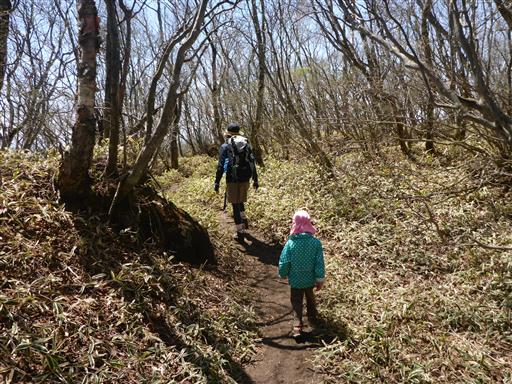
突然シャクナゲの花が現れる。
辺りは落葉樹の森で、ちょっと浮いた存在だ。
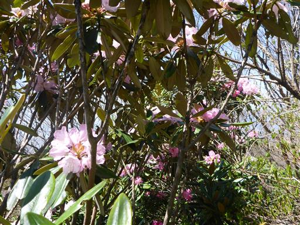
岩場に出て、展望が一気に広がる。
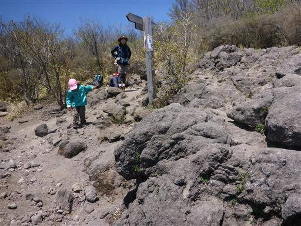
赤城山の山々を望む。左に見えるのが地蔵岳、赤城最高峰の黒檜山はその奥だ。
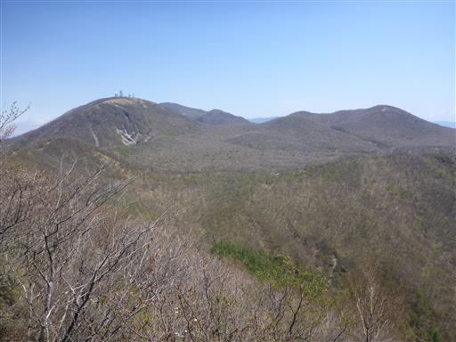
アカヤシオはほぼ終わっていて、もうミツバツツジが咲いている。
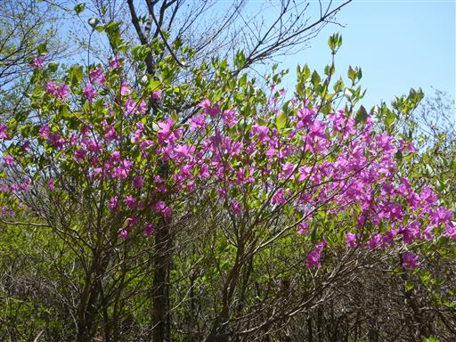
芝の広場に到着。少し風が強いがここに腰を下ろして昼食をとる。
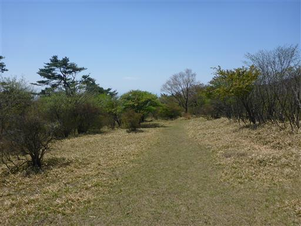
先ほど登った荒山が見えている。
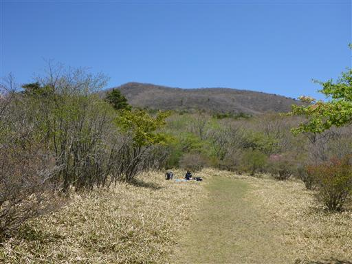
ヤマツツジだろうか？開花まであと一歩というところだ。
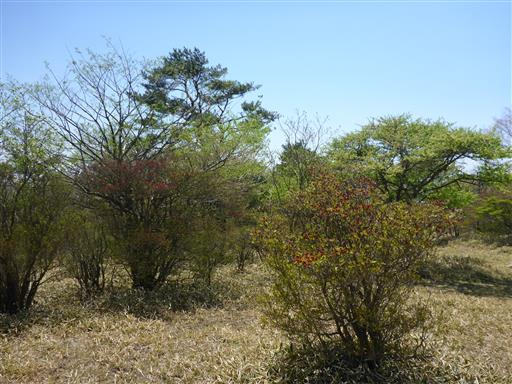
昼食をとったら広場を走り回って遊ぶ。
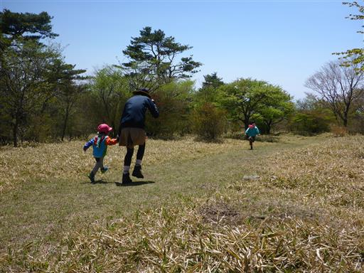
娘がザックを担いで遊んでいる。息子を乗せて担いでくれると楽なのだが…
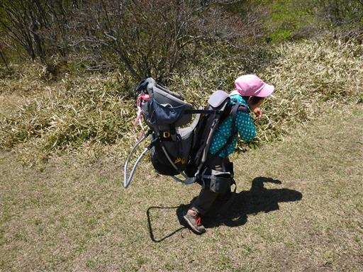
ここからの下山は息子も歩く。
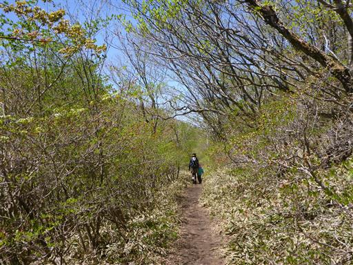
荒山高原に到着。景色の良い場所で、ここで昼食でも良かった。
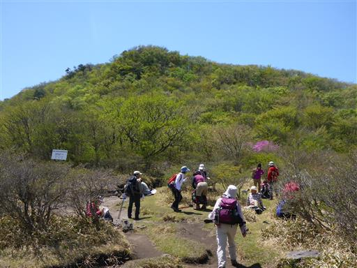
くり太郎の標識があったので、寄り道して行く。
大きな木が2本立っているが、葉は付けていない。もう枯れているのだろうか？
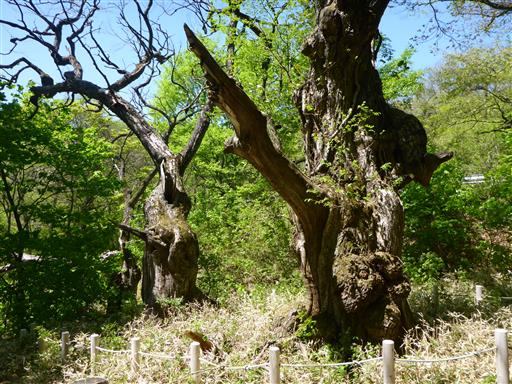
駐車場にあるローラーすべり台の案内。
娘が登山前から気になっていた存在だ。行ってみることにする。
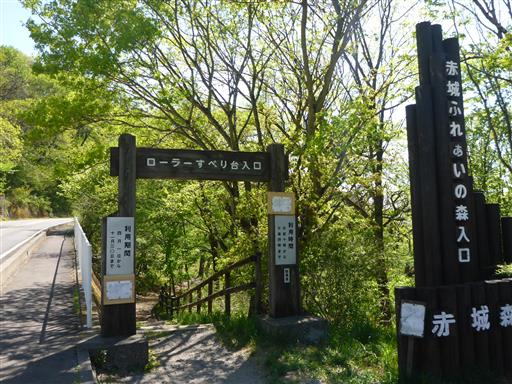
明るい道を歩いていく。
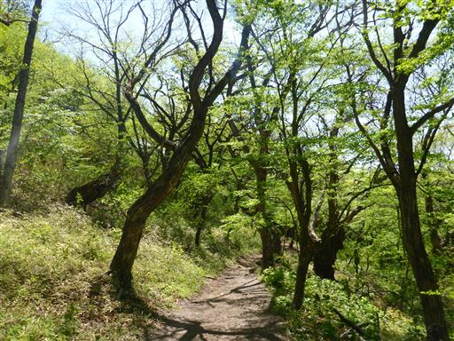
所々大きな木も立っている。
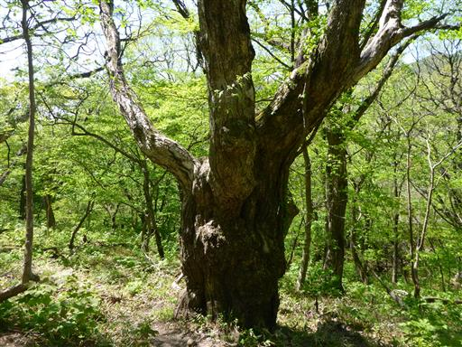
しばらく歩くとローラーすべり台に到着する。
辺りは閑散としていて滑り放題だ。側では200円でマットを貸し出している。
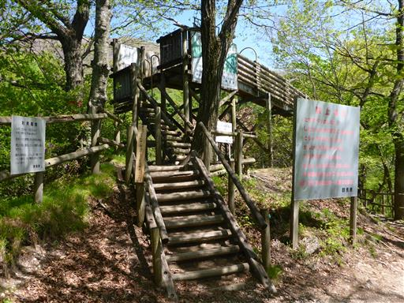
長さ380mの長い長いすべり台。
しかしマットを借りなかったからか、あまり滑らない。
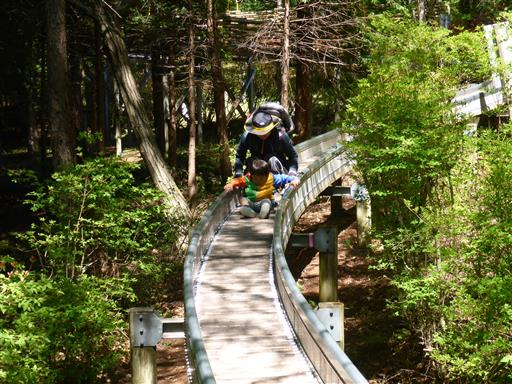
滑り終わってしばらくしたら娘がぐずつき出す。
制御不能になったため、近くの駐車場に緊急移動。一人で車を取りに行くことにする。
今回は少しだけだったが久しぶりのアカヤシオを見られてよかった。
赤城山は様々なピークがあるので、これからいろいろ開拓できそうだ。
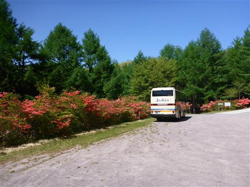